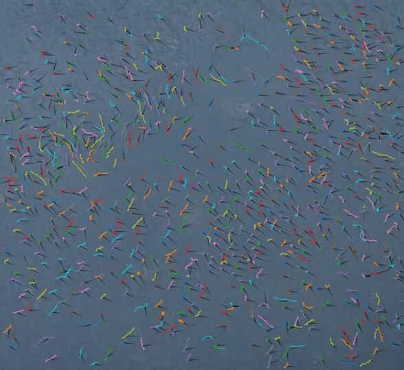
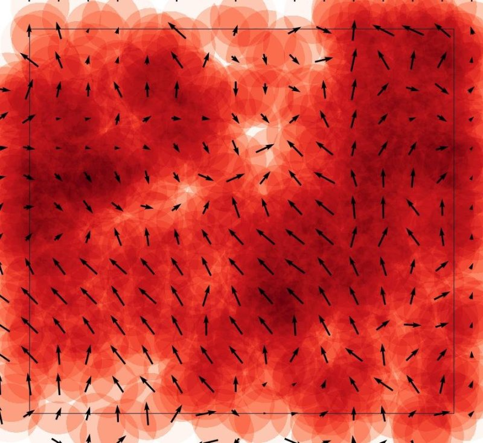
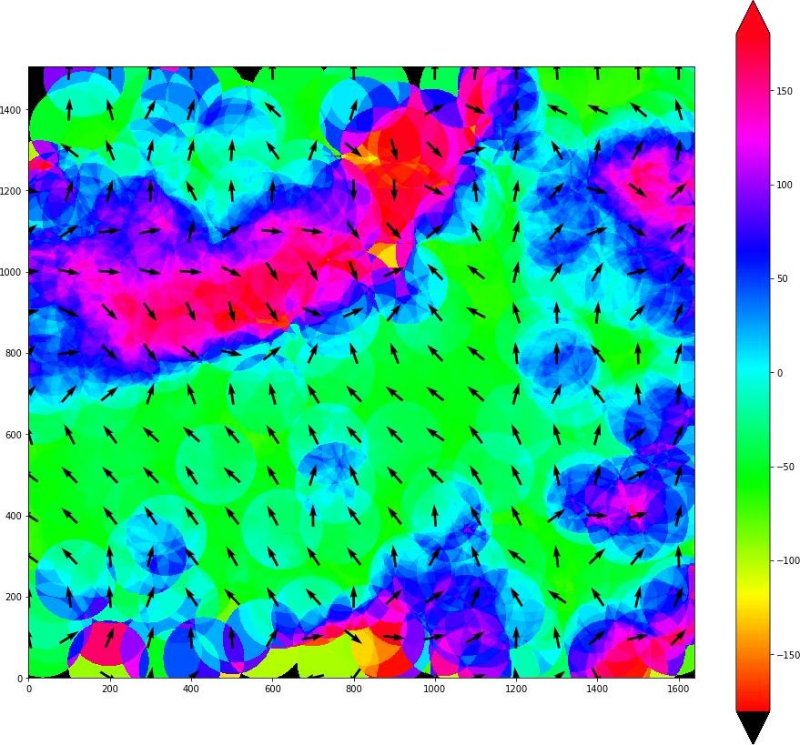
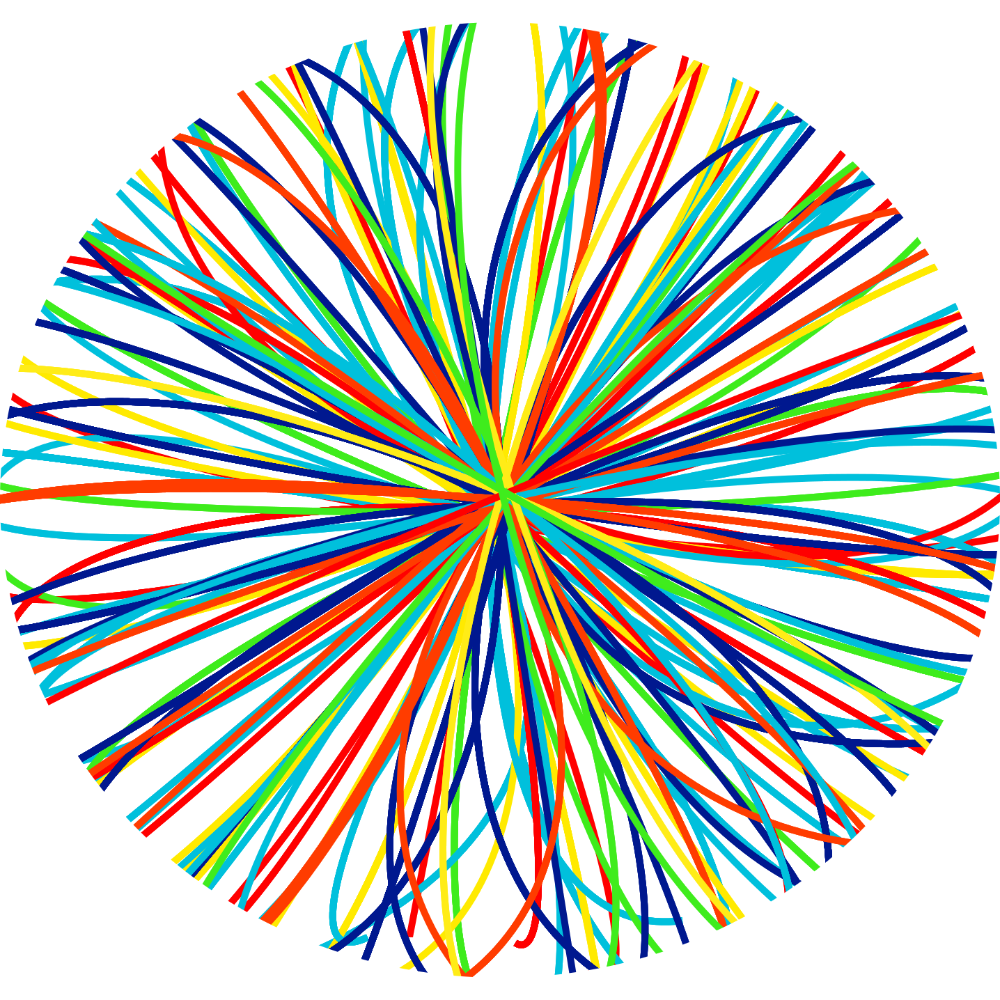
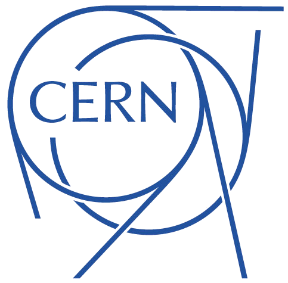
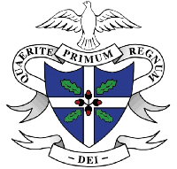

Mathematics and Theoretical Physics Student at the University of St Andrews | Web Editor at i4is
About Me
Fifth-year mathematics and theoretical physics student at the University of St Andrews. I have a strong interest in solar physics and plan on undertaking a PhD in this area, in particular, magnetohydrodynamics.
Through work experience and internships at the University of St Andrews, Humboldt University of Berlin, CERN, the Institute of Physics and more I have gained first-hand knowledge of how the physics learned in the classroom is applied to real-world problems. I enjoy modelling physics and mathematics problems using Python, Fortran and the Wolfram Language as well as developing data science and machine learning skills.
I am the web editor for a scientific organisation, and I produce a science podcast for the University of St Andrews Physics Society. Also, I enjoy using PHP along with SQL to create web applications, and I have A-levels in Physics, Mathematics, Further Mathematics and Music as well as an AS in Chemistry.
Experience
University of St Andrews
Solar Physics Summer Student
May 2018 — Jul 2018
I spent six weeks working in the Solar and Magnetospheric Theory group within the School of Mathematics and Statistics under the supervision of Prof. Alan Hood.
My research project involved exploring the magnetohydrodynamics equations in the context of the sun, investigating how a magnetic field behaves in the presence of a non-constant Alfvén speed, which introduces the process of phase mixing.
This was later extended to use a modified version of the induction equation — one with the biharmonic operator instead of the Laplacian. This corresponds to the process of hyper-diffusion. Heating according to this modified induction equation was also explored.
Initiative for Interstellar Studies
Web Editor
Jan 2018 — Present
Keep online content up-to-date and enhance its presentation.
Manage the structure of the website and write new content.
Have a key role in the organisation's membership scheme, leading the content of the scheme as well as providing assistance with its technical implementation. This also involves participating in, and occasionally chairing, weekly team teleconferences as well as email discussions with other staff around the world.
Programmed many new bespoke features into the website, allowing routine tasks to be automated, increasing functionality, and improving accessibility to information about services.
Ensure website is indexed effectively by search engines by using SEO techniques.
Provided advice and assistance on procuring service contracts and financial matters as well as other business related to the organisation.
Humboldt University of Berlin
Student Intern
Jun 2017 — Aug 2017
Spent three months during summer 2017 working on a project involving using a convolutional neural network to detect, from videos, fish swimming on the surface of sulfur water.
Wrote a program that takes the fish detected by the neural network and connects the fish across frames in the video. It then filters out poor quality detections by setting a minimum number of frames a chain of detections has to be present in before it is considered to be a fish.
My program significantly improved the reliability of the output from the neural network. This was proven by comparing the filtered detections with the detections from the neural network using annotated ground truth frames.
I also read about neural networks and retrained the existing neural network with new training data and different training parameters. I created multiple models then analysed their accuracy to find the optimal parameters.
Used Bash extensively throughout to work with files and run programs on the computer. Created scripts to automate many tasks. Developed my skills using Vim.
More details:
Elliptical Gaussians are used to determine probabilities that two detections in neighbouring frames represented the same fish. Fish in adjacent frames are then connected in order of probability.
Due to the low quality of the videos all connections could not be made, therefore, more distant probabilities are then processed in a complex algorithm which prioritised high probability links and long chains of detections. This algorithm is able to evaluate previously created links and override them if it finds a better link.
Connections between long chains of detections are then made, provided their ends are physically very close.
The chains of detections are then filtered based on their length and various plots and diagrams are produced. These plots include position, orientation, density, polarisation and nematic order.




University of St Andrews Physics Society
Treasurer | Publicity Officer
May 2018 — Present | May 2016 — May 2018
Worked closely with other committee members to boost attendance at events. Anticipated their needs and took initiative, designing and distributing posters and other media prior to events.
Adapted my schedule when old projects changed and when new projects started.
Built responsive website with member and events management system using HTML, CSS, PHP, SQL and iCalander as well as Slack and Mailchimp integrations to allow the committee to manage the society better. Used Google Analytics to monitor traffic and assess effectiveness of website content. Made adjustments accordingly.
Co-founded and produced a science podcast, managing the technical aspects including the website, radio station, emails, RSS feed and editing and mastering the raw audio. Analysed email and website click-through rates to boost listening figures. I personally interviewed guests on occasions.
Assisted with funding applications by recommending new podcasting equipment as well as participating in interviews for society awards. The society won 2nd most innovative society in St Andrews in 2017 primarily for the podcast.
Implemented new advertising strategies including advertising through a Snapchat Geofilter and digital displays. Improved the society's social media presence by migrating to a Facebook Page.

CERN
Student Intern
Jul 2014
Spent a week visiting sites and attending lectures and meetings. Got to experience what it involves to be a physicist by shadowing the head of operations in the beams department as well as his colleagues.
Collected data on the chromaticity and horizontal and vertical tune while controlling a beam cycle in the proton synchrotron by manipulating currents in various magnets. Developed my problem solving skills while first cleaning then analysing this dataset using Mathematica.
Developed my listening skills when attending meetings and listening to explanations which I was required to act upon.
Institute of Physics
CERN Mini Expo Guide
Sep 2013
Spent four days explaining particle physics to primary and secondary school children and to the general public.
This helped to develop my teamwork and communication skills.

Student at St Columb's College
Peer Mentor and Prefect
Jan 2014 — June 2015
As a peer mentor I liaised with teachers and other peer mentors when teaching a personal development programme to a first year class.
Created various additional worksheets which the teacher retained to integrate into the next programme.
Explained to prospective students and parents the benefits of the scheme. Attended a forum and presented to the other mentors points raised and suggested improvements.
Received extensive training in effective communication, presentation skills and the importance of confidentiality.
Voted a prefect by my peers and teachers and took responsibility for supervising and guiding other pupils.
I was elected to represent my year group at the school council.
These roles have allowed me to make presentations to large groups confidently.